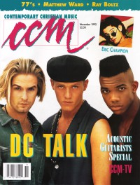

CMnexus: Contemporary Christian culture, music, and media.
|
|
CCM, Nov 1992, vol. 15, iss. 5
| Cover |
|---|
|  | | Writers in this Issue |
|---|
Brown, Bruce A.
Fischer, John
Geisler, David
Halverson, Holly
Hefner, April
Horne, J. Ellyn
Krause, Anya
MacIntosh, Dan
Milette, Dan
Newcomb, Brian Quincy
Paulson, Bob
Rake, Jamie Lee
Well, Chris
|
Cover Feature:
- "Putting (dc) Talk Into Action" by Jamie Lee Rake
Article:
- "Going To Extremes" by Dan MacIntosh
- "Music For The Common Man" by J. Ellyn Horne
- "Making A Difference" by Dan Milette
- "Behind The Scenes With CCM TV" by Anya Krause
Christian Musician:
- "Steel Strings and a Box of Wood"
In The News:Faces:What's New:In Concert:
- "Edina Community Center, Edina Minnesota" by Bob Paulson
Getting The Message:John Fischer:
- "Apocalypse When" by John Fischer
|